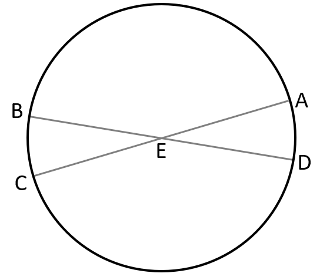
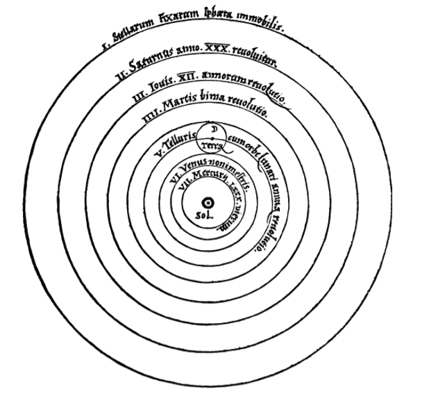
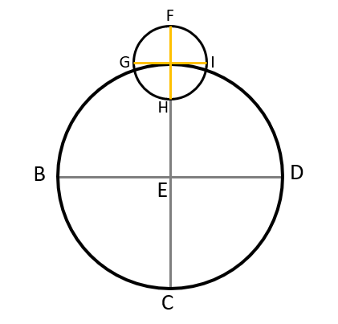
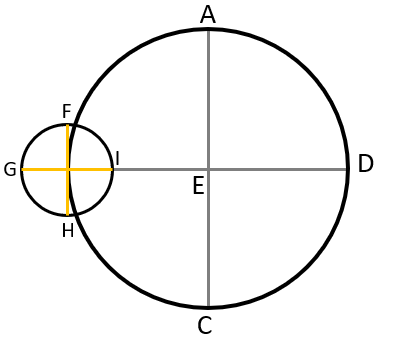
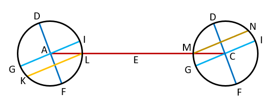

From ancient times, philosophers adhered to the belief that the heavens were arranged in circles (which by definition are perfectly round), causing confusion among astronomers who recorded the often eccentric motion of the planets, which sometimes appeared to halt in their orbit of Earth and move retrograde across the sky.[1]
The oldest extant source that clearly states that Earth is a sphere and that gives a sound argument to support the claim is Aristotle's On the Heavens (c. 350 BCE), but this knowledge likely went back several generations earlier.[2] The culminating work of Greek astronomy is the Almagest of Claudius Ptolemaeus (2nd century CE). Ptolemy built on the work of his predecessors—notably Hipparchus—but his work was so successful that it made older works of planetary astronomy superfluous.[2] The Ptolemaic system remained Europe's accepted cosmology for more than 1,000 years, but by Copernicus' day accumulated astronomical evidence had thrown some of his theories into confusion.[1]
Astronomy made no major advances in strife-torn medieval Europe. The birth and expansion of Islam after the seventh century led to a flowering of Arabic and Jewish cultures that preserved, translated, and added to many of the astronomical ideas of the Greeks. Many of the names of the brightest stars, for example, are today taken from the Arabic, as are such astronomical terms as "zenith."[3] As European culture began to emerge from its long, dark age, trading with Arab countries led to a rediscovery of ancient texts such as Almagest and to a reawakening of interest in astronomical questions.[3]
During the renaissance period, astronomy began to undergo a revolution in thought known as the Copernican Revolution, which gets the name from the astronomer Nicolaus Copernicus, who proposed a heliocentric system, in which the planets revolved around the Sun and not the Earth. His De revolutionibus orbium coelestium was published in 1543. While in the long term this was a very controversial claim, in the very beginning it only brought minor controversy.[4]
Nicolaus Copernicus was born on 19 February 1473 in the city of Toruń (Thorn), in the province of Royal Prussia, in the Crown of the Kingdom of Poland.[5] Copernicus was born and died in Royal Prussia, a region that had been part of the Kingdom of Poland since 1466. A polyglot and polymath, he obtained a doctorate in canon law and was a mathematician, astronomer, physician, classics scholar, translator, governor, diplomat, and economist.[5]
Sometime between 1508 and 1514, Copernicus wrote a short astronomical treatise commonly called the Commentariolus, or "Little Commentary," which laid the basis for his sun-centered or heliocentric theory, a radical departure from the conventional wisdom of his era.[1]
The Commentariolus was only intended as an introduction to Copernicus's ideas.[6] In a sense it was an announcement of the greater work that Copernicus had begun. The Commentariolus was never published during Copernicus's lifetime, but he sent manuscript copies to various astronomers and philosophers.[6] After further long development of his theory, Copernicus published the mature version in 1543 in his landmark work, De revolutionibus orbium coelestium (On the Revolutions of the Heavenly Spheres).[7]
De revolutionibus itself was divided into six sections or parts, called "books":[5]
While Copernicus's work sparked the "Copernican Revolution", it did not mark its end. In fact, Copernicus's own system had multiple shortcomings that would have to be amended by later astronomers.[8]
The Universe is Spherical:
First of all, we must note that the universe is spherical. The reason is either that, of all forms, the sphere is the most perfect, needing no joint and being a complete whole, which can be neither increased nor diminished; or that it is the most capacious of figures, best suited to enclose and retain all things; or even that all the separate parts of the universe, I mean the sun, moon, planets and stars, are seen to be of this shape.
The Earth too is Spherical:
The earth also is spherical, since it presses upon its center from every direction. Yet it is not immediately recognized as a perfect sphere on account of the great height of the mountains and depth of the valleys. For a traveler going from any place toward the north, that pole of the daily rotation gradually climbs higher, while the opposite pole drops down an equal amount. More stars in the north are seen not to set, while in the south certain stars are no longer seen to rise. Thus Italy does not see Canopus, which is visible in Egypt; and Italy does see the River's last star, which is unfamiliar to our area in the colder region. Such stars, conversely, move higher in the heavens for a traveler heading southward, while those which are high in our sky sink down. Meanwhile, moreover, the elevations of the poles have the same ratio everywhere to the portions of the earth that have been traversed. This happens on no other figure than the sphere. Hence the earth too is evidently enclosed between poles and is therefore spherical.
Furthermore, evening eclipses of the sun and moon are not seen by easterners, nor morning eclipses by westerners, while those occurring in between are seen later by easterners but earlier by westerners.
The waters press down into the same figure also, as sailors are aware, since land which is not seen from a ship is visible from the top of its mast. On the other hand, if a light is attached to the top of the mast, as the ship draws away from land, those who remain ashore see the light drop down gradually until it finally disappears, as though setting.
The motion of the heavenly bodies is uniform, eternal, and circular or compounded of circular motions:
The motion of the heavenly bodies is circular, since the motion appropriate to a sphere is rotation in a circle. In connection with the numerous [celestial] spheres, however, there are many motions. The most conspicuous of all is the daily rotation, which the Greeks call nuchthemeron, that is, the interval of a day and a night. The entire universe, with the exception of the earth, is conceived as whirling from east to west in this rotation.
Secondly, we see other revolutions as advancing in the opposite direction, that is, from west to east; I refer to those of the sun, moon, and five planets. The sun thus regulates the year for us, and the moon the month, which are also very familiar periods of time. In like manner each of the other five planets completes its own orbit.
Yet [these motions] differ in many ways [from the daily rotation or first motion]. In the first place, they do not swing around the same poles as the first motion, but run obliquely through the zodiac. Secondly, these bodies are not seen moving uniformly in their orbits, since the sun and moon are observed to be sometimes slow, at other times faster in their course. Moreover, we see the other five planets also retrograde at times, and stationary at either end [of the regression]. And whereas the sun always advances along its own direct path, they wander in various ways, straying sometimes to the south and sometimes to the north; that is why they are called "planets" [wanderers]. Furthermore, they are at times nearer to the earth, when they are said to be in perigee; at other times they are farther away, when they are said to be in apogee.
Nevertheless, despite these irregularities, we must conclude that the motions of these bodies are ever circular or compounded of circles, because these non-uniformities recur regularly according to a constant law. This could not happen unless the motions were circular, since only the circle can bring back the past.
A simple heavenly body cannot be moved by a single sphere nonuniformly. For this nonuniformity would have to be caused either by an inconstancy in the moving force or by an alteration in the revolving body. It is improper to conceive any such defect in objects constituted in the best order. It stands to reason, therefore, that their uniform motions appear nonuniform to us. The cause may be either that their circles have poles different [from the earth's] or that the earth is not at the center of the circles on which they revolve.
To us who watch the course of these planets from the earth, it happens that our eye does not keep the same distance from every part of their orbits, but on account of their varying distances these bodies seem larger when nearer than when farther away (as has been proved in optics). Likewise, in equal arcs of their orbits their motions will appear unequal in equal times on account of the observer's varying distance.
Does circular motion suit the earth? What is its position?:
There is general agreement among the authorities that the earth is at rest in the middle of the universe. They hold the contrary view to be inconceivable or downright silly. Nevertheless, if we examine the matter more carefully, we shall see that this problem has not yet been solved, and is therefore by no means to be disregarded.
Every observed change of place is caused by a motion of either the observed object or the observer or, it is caused by an unequal displacement of each. For when things move with equal speed in the same direction, the motion is not perceived between the observed object and the observer. Therefore, if any motion is ascribed to the earth, in all things outside it the same motion will appear, but in the opposite direction, as though they were moving past it. Such in particular is the daily rotation, since it seems to involve the entire universe except the earth and what is around it. However, if you grant that the heavens have no part in this motion but that the earth rotates from west to east, you will find that this is the actual situation concerning the apparent rising and setting of the sun, moon, stars and planets. Moreover since the heavens, which enclose and provide the setting for everything, constitute the space common to all things, it is not at first blush clear why motion should not be attributed rather to the enclosed than to the enclosing, to the thing located in space rather than to the framework of space. This view was certainly that of Heraclides and Ecphantus the Pythogorean and Hicetas of Syracuse (according to Cicero); for they ascribed the setting of the stars to the earth's interposition, and their rising to its withdrawal.
If we assume its daily rotation, another and no less important question follows concerning the earth's position. There has been virtually unanimous acceptance of the belief that the middle of the universe is the earth. Anyone who denies that the earth occupies the middle or center of the universe may nevertheless assert that its distance [therefrom] is insignificant in comparison with [the distance of] the sphere of the fixed stars, but perceptible and noteworthy in relation to the spheres of the sun and the other planets. He may deem this to be the reason why their motions appear nonuniform, as conforming to a center other than the center of the earth. The fact that the same planets are observed nearer to the earth and farther away necessarily proves that the center of the earth is not the center of their circles.
The immensity of the heavens compared to the size of the earth:
A circle that bisects a sphere passes through its center, and is the greatest circle that can be described on it. Let circle ABCD be a horizon, and let the earth, from which we do our observing, be E, the center of the horizon.
Now, through a dioptra or horoscopic instrument or water level placed at E, let the first point of the Crab be sighted rising at point C, and at that instant the first point of the Goat is perceived to be setting at A. Then A, E, and C are on a straight line through the dioptra. This line is evidently a diameter of the ecliptic, since six visible signs form a semicircle, and E, the [line's] center, is identical with the horizon's center.
Again, let the signs shift their position until the first point of the Goat rises at B. At that time the Crab will also be observed setting at D. BED will be a straight line and a diameter of the ecliptic. But, as we have already seen, AEC also is a diameter of the same circle. Its center, obviously, is the intersection [of the diameters]. A horizon, then, in this way always bisects the ecliptic, which is a great circle of the sphere, and its center is clearly identical with the center of the ecliptic.
Yet a line drawn from the earth's surface [to a point in the firmament] must be distinct from the line drawn from the earth's center [to the same point]. Nevertheless, because these lines are immense in relation to the earth, they become like parallel lines. For in comparison with their length the space enclosed by them becomes imperceptible.
This reasoning certainly makes it quite clear that the heavens are immense by comparison with the Earth. On the testimony of the senses, the earth is related to the heavens as a point to a body, and a finite to an infinite magnitude. It does not follow that the Earth must be at rest at the centre of the Universe. Indeed, a rotation in twenty-four hours of the enormously vast universe should astonish us even more than a rotation of its least part, which is the earth.
The argument that the center is motionless, and what is nearest the center moves the least, does not prove that the earth is at rest in the middle of the universe. Suppose you say that the heavens rotate but the poles are stationary, and what is closest to the poles moves the least. The Little Bear, for example, being very close to the pole, is observed to move much more slowly than the Eagle or the Little Dog because it describes a smaller circle. Yet all these constellations belong to a single sphere. These are brought round in equal times, though not over equal spaces, by the rotation of the whole sphere. The upshot of the argument, then, is the claim that the earth as a part of the celestial sphere shares in the same nature and movement so that, being close to the center, it has a slight motion. Therefore, being a body and not the center, it too will describe arcs like those of a celestial circle, though smaller, in the same time. The falsity of this contention is clearer than daylight. For it would always have to be noon in one place, and always midnight in another, so that the daily risings and settings could not take place, since the motion of the whole and the part would be one and inseparable.
Things separated by the diversity of their situations are subject to a very different relation: those enclosed in a smaller orbit revolve faster than those traversing a bigger circle. Thus Saturn, the highest of the planets, revolves in thirty years; the moon, undoubtedly the nearest to the earth, completes its course in a month; and to close the series, it will be thought, the earth rotates in the period of a day and a night. Accordingly the same question about the daily rotation emerges again. On the other hand, likewise still undetermined is the earth's position, which has been made even less certain by what was said above. For that proof establishes no conclusion other than the heavens' unlimited size in relation to the earth.
Why the ancients thought that the earth remained at rest in the universe as its center:
As their main reason, they adduce heaviness and lightness. Earth is in fact the heaviest element, and everything that has weight is borne toward it in an effort to reach its inmost center. The earth being spherical, by their own nature heavy objects are carried to it from all directions at right angles to its surface. Hence, if they were not checked at its surface, they would collide at its center. But things brought to the middle, it seems to follow, come to rest at the middle. All the more, then, will the entire earth be at rest in the middle, and as the recipient of every falling body it will remain motionless thanks to its weight.
According to Aristotle, the motion of a single simple body is simple; of the simple motions, one is straight and the other is circular; of the straight motions, one is upward and the other is downward. Hence every simple motion is either toward the middle, that is, downward; or away from the middle, that is, upward; or around the middle, that is, circular. To be carried downward, that is, to seek the middle, is a property only of earth and water, which are considered heavy; on the other hand, air and fire, which are endowed with lightness, move upward and away from the middle. To these four elements it seems reasonable to assign rectilinear motion, but to the heavenly bodies, circular motion around the middle.
Therefore, remarks Ptolemy of Alexandria, if the earth were to move, merely in a daily rotation, a motion would have to be exceedingly violent and its speed unsurpassable to carry the entire circumference of the earth around in twenty-four hours. But things which undergo an abrupt rotation seem utterly unsuited to gather [bodies to themselves], and seem more likely, if they have been produced by combination, to fly apart unless they are held together by some bond. The earth would long ago have burst asunder, he says, and dropped out of the skies (a quite preposterous notion); and, what is more, living creatures and any other loose weights would by no means remain unshaken. Nor would objects falling in a straight line descend perpendicularly to their appointed place, which would meantime have been withdrawn by so rapid a movement. Moreover, clouds and anything else floating in the air would be seen drifting always westward.
The inadequacy of the previous arguments and a refutation of them:
For these and similar reasons forsooth the ancients insist that the earth remains at rest in the middle of the universe, and that this is its status beyond any doubt. Yet if anyone believes that the earth rotates, surely he will hold that its motion is natural, not violent; what is in accordance with nature produces effects contrary to those resulting from violence, since things to which force or violence is applied must disintegrate and cannot long endure. On the other hand, that which is brought into existence by nature is well-ordered and preserved in its best state. Ptolemy has no cause, then, to fear that the earth and everything earthly will be disrupted by a rotation created through nature's handiwork, which is quite different from what art or human intelligence can accomplish.
Why does he not feel this apprehension even more for the universe, whose motion must be the swifter, the bigger the heavens are than the earth? Have the Heavens become so vast because of the centrifugal force of their violent motion, and would they collapse if they stood still? Were this reasoning sound, surely the size of the heavens would likewise grow to infinity. For the higher they are driven by the power of their motion, the faster that motion will be, since the circumference of which it must make the circuit in the period of twenty-four hours is constantly expanding; and, in turn, as the velocity of the motion mounts, the vastness of the heavens is enlarged. In this way the speed will increase the size, and the size the speed, to infinity. Yet according to the familiar axiom of physics that the infinite cannot be traversed or moved in any way, the heavens will therefore necessarily remain stationary.
Beyond the heavens there is said to be no body, no space, no void, absolutely nothing, so that there is nowhere the heavens can go. In that case it is really astonishing if something can be held in check by nothing. We regard it as a certainty that the earth, enclosed between poles, is bounded by a spherical surface. Why then do we still hesitate to grant it the motion appropriate by nature to its form rather than attribute a movement to the entire universe, whose limit is unknown and unknowable? Why should we not admit, with regard to the daily rotation, that the appearance is in the heavens and the reality in the earth? For when a ship is floating calmly along all external things seem to have the motion that is really that of the ship, while those within the ship feel that they and all its contents are at rest. The motion of the earth can unquestionably produce the impression that the entire universe is rotating.
What about the clouds and the other things that hang in the air in any manner whatsoever, or the bodies that fall down, and conversely those that rise aloft? We would only say that not merely the earth and the watery element joined with it have this motion, but also no small part of the air and whatever is linked in the same way to the earth. The reason may be either that the nearby air, mingling with earthy or watery matter, conforms to the same nature as the earth, or that the air's motion, acquired from the earth by proximity, shares without resistance in its unceasing rotation. No less astonishingly, on the other hand, is the celestial movement declared to be accompanied by the uppermost belt of air. This is indicated by those bodies that appear suddenly, I mean, those that the Greeks called "comets" and "bearded stars." Like the other heavenly bodies, they rise and set. They are thought to be generated in that region. That part of the air, we can maintain, is unaffected by the earth's motion on account of its great distance from the earth. The air closest to the earth will accordingly seem to be still. And so will the things suspended in it, unless they are tossed to and fro, as indeed they are. For what else is the wind in the air but the wave in the sea?
As a quality, moreover, immobility is deemed nobler and more divine than change and instability, which are therefore better suited to the earth than to the universe.
Last of all, the planets obviously approach closer to the earth and recede farther from it. Then the motion of a single body around the middle, which is thought to be the center of the earth, will be both away from the middle and also toward it. Motion around the middle, consequently, must be interpreted in a more general way, the sufficient condition being that each such motion encircle its own center. You see, then, that all these arguments make it more likely that the earth moves than that it is at rest.
Can several motions be attributed to the earth? The center of the universe:
Since nothing prevents the earth from moving, I suggest that we should now consider also whether several motions suit it, so that it can be regarded as one of the planets. For, it is not the center of all the revolutions. This is indicated by the planet's apparent nonuniform motion and their varying distances from the earth. These phenomena cannot be explained by circles concentric with the earth. Therefore, since there are many centers, it will not be by accident that the further question arises whether the center of the universe is identical with the center of terrestrial gravity or with some other point. If, the earth too moves in other ways, for example, about a center, its additional motions must likewise be reflected in many bodies outside it.
Among these motions we find the yearly revolution. For if this is transformed from a solar to a terrestrial movement, with the sun acknowledged to be at rest, the risings and settings which bring the zodiacal signs and fixed stars into view morning and evening will appear in the same way. The stations of the planets, moreover, as well as their retrogradations and [resumptions of ] forward motion will be recognized as being, not movements of the planets, but a motion of the earth, which the planets borrow for their own appearances. Lastly, it will be realized that the sun occupies the middle of the universe. All these facts are disclosed to us by the principle governing the order in which the planets follow one another, and by the harmony of the entire universe, if only we look at the matter, as the saying goes, with both eyes. If, therefore, the Earth also has other motions, for example, about a center, these must necessarily resemble the many outside motions having a yearly period. If we take the Sun to be at rest, then morning and evening settings of Stars will be unaffected, while the stationary points, retrogressions, and progressions of the Planets are due not to their own proper motions, but to that of the Earth, which they reflect.
The order of the heavenly spheres:
Of all things visible, the highest is the heaven of the fixed stars. But the ancient philosophers wanted to arrange the planets in accordance with the duration of the revolutions. Their principle assumes that of objects moving equally fast, those farther away seem to travel more slowly. The moon revolves in the shortest period of time because, in their opinion, it runs on the smallest circle as the nearest to the earth. The highest planet, on the other hand, is Saturn, which completes the biggest circuit in the longest time. Below it is Jupiter, followed by Mars.
With regard to Venus and Mercury, however, differences of opinion are found. Venus and Mercury are located above the sun by some authorities, like Plato in his Timaeus, but below the sun by others, like Ptolemy and many of the moderns. Al-Bitruji places Venus above the sun, and Mercury below it.
According to Plato's followers, all the planets, being dark bodies otherwise, shine because they receive sunlight. If they were below the sun, the light which they receive would be reflected mostly upward, that is, toward the sun, as we see in the new or dying moon. In addition, they argue, the sun must sometimes be eclipsed by the interposition of these planets, and its light cut off in proportion to their size. Since this is never observed, these planets do not pass beneath the sun at all.
Those who locate Venus and Mercury below the sun base their reasoning on the wide space which they notice between the sun and the moon. For the moon's greatest distance from the earth is 64 1/6 earth-radii. This is contained, according to them, about 18 times in the sun's least distance from the earth, which is 1160 earth-radii. Therefore between the sun and the moon there are 1096 earth-radii. Consequently, to avoid having so vast a space remain empty, they announce that the same numbers almost exactly fill up the apsidal distances, by which they compute the thickness of those spheres. Thus the moon's apogee is followed by Mercury's perigee. Mercury's apogee is succeeded by the perigee of Venus, whose apogee, finally, almost reaches the sun's perigee. For between the apsides of Mercury they calculate about 177 1/2 earth-radii. Then the remaining space is very nearly filled by Venus' interval of 910 earth-radii.
Therefore, they do not admit that these heavenly bodies have any opacity like the moon's. On the contrary, these shine either with their own light or with the sunlight absorbed throughout their bodies. Moreover, they do not eclipse the sun, because it rarely happens that they interfere with our view of the sun, since they generally deviate in latitude. Besides, they are tiny bodies in comparison with the sun. Yet in his Paraphrase of Ptolemy, Ibn Rushd reports having seen something blackish when he found a conjunction of the sun and Mercury indicated in the tables. And thus these two planets are judged to be moving below the sun's sphere.
Now there are those who locate Venus and then Mercury below the sun, or separate these planets [from the sun] in some other sequence. What reason will they adduce to explain why Venus and Mercury do not likewise traverse separate orbits divergent from the sun, like the other planets, without violating the arrangement [of the planets] in accordance with their [relative] swiftness and slowness? Then one of two alternatives will have to be true. Either the earth is not the center to which the order of the planets and spheres is referred, or there really is no principle of arrangement nor any apparent reason why the highest place belongs to Saturn rather than to Jupiter or any other planet.
Therefore, we should not in the least disregard what was familiar to Martianus Capella, the author of an encyclopedia, and to certain other Latin writers. For according to them, Venus and Mercury revolve around the sun as their center. This is the reason, in their opinion, why these planets diverge no farther from the sun than is permitted by the curvature of their revolutions. Thus Mercury's sphere will surely be enclosed within the sphere of Venus, which by common consent is more than twice as big.
As for the outer planets, they are always closest to the earth, as is well known, when they are in opposition to the sun, with the earth between them and the sun. On the other hand, they are at their farthest from the earth, when they become invisible in the vicinity of the sun, namely, when we have the sun between them and the earth. These facts are enough to show that their center belongs more to the sun, and is identical with the center around which Venus and Mercury likewise execute their revolutions. since all these planets are related to a single center, the space remaining between Venus' convex sphere and Mars' concave sphere must be set apart as also a sphere or spherical shell, both of whose surfaces are concentric with those spheres. This [intercalated sphere] receives the earth together with its attendant, the moon, and whatever is contained within the moon's sphere.
Near the sun is the center of the universe. Moreover, since the sun remains stationary, whatever appears as a motion of the sun is really due rather to the motion of the earth. In comparison with any other spheres of the planets, the distance from the earth to the sun has a magnitude which is quite appreciable in proportion to those dimensions. But the size of the universe is so great that the distance earth-sun is imperceptible in relation to the sphere of the fixed stars.
The first and the highest of all is the sphere of the fixed stars, which contains itself and everything, and is therefore immovable. The sphere of the fixed stars is followed by the first of the planets, Saturn, which completes its circuit in 30 years. After Saturn, Jupiter accomplishes its revolution in 12 years. Then Mars revolves in 2 years. The annual revolution takes the series fourth place, which contains the earth. In the fifth place Venus returns in 9 months. Lastly, the sixth place is held by Mercury, which revolves in a period of 80 days.
In this arrangement, therefore, we discover a marvelous symmetry of the universe, and an established harmonious linkage between the motion of the spheres and their size, such as can be found in no other way. For this permits a not inattentive student to perceive why the forward and backward arcs appear greater in Jupiter than in Saturn and smaller than in Mars, and on the other hand greater in Venus than in Mercury. This reversal in direction appears more frequently in Saturn than in Jupiter, and also more rarely in Mars and Venus than in Mercury.
Proof of the earth's triple motion:
The first motion, is the rotation which is the characteristic of a day plus a night. This turns around the earth's axis from west to east, just as the universe is deemed to be carried in the opposite direction.
The second is the yearly motion of the center, which traces the ecliptic around the sun. It travels between Venus and Mars, and because of it, the sun seems to move through the zodiac. Thus, for example, when the earth's center is passing through the Goat, the sun appears to be traversing the Crab; with the earth in the Water Bearer, the sun seems to be in the Lion, and so on. The equator and Earth's axis are variably inclined to this circle, which passes through the middle of the Zodiac, since if they were fixed and followed simply the motion of the Earth's centre there would be no inequality of days and nights.
The third motion in inclination is consequently required. This also is a yearly revolution, but it occurs in the reverse order of the signs, that is, in the direction opposite to that of the motion of the center. These two motions are opposite in direction and nearly equal in period. Let us describe a circle ABCD, which the annual revolution of the earth's center has traced in the plane of the ecliptic. Near its center let the sun be E. Let A represent the first point of the Crab, B of the Balance, C of the Goat, and D of the Ram.
Now let us assume that the earth's center is originally at A. About A I shall draw the terrestrial equator FGHI.
This is not in the same plane [as the ecliptic], except that the diameter GAI is the intersection of the circles, meaning, of the equator and the ecliptic. The diameter FAH is perpendicular to GAI, F being the limit of the [equator's] greatest inclination to the south, and H to the north. Under the conditions thus set forth, the earth's inhabitants will see the sun near the center E undergo the winter solstice in the Goat. This occurs because the greatest northward inclination, H, is turned toward the sun. For, the inclination of the equator to the line AE, through the agency of the daily rotation, traces the winter solstice parallel to the equator at an interval subtended by EAH, the angle of the obliquity. Now let the earth's center start out in the order of the signs, and let F, the limit of maximum inclination, travel along an equal arc in the reverse order of the signs, until at B both have traversed a quadrant of their circles.
From B, the first point of the Balance, E will seem to be in the Ram. Accordingly the sun will be seen in the spring equinox.
Let the earth's center proceed under the assumed conditions, and when it has completed a semicircle at C, the sun will appear to enter the Crab. But F, the southernmost inclination of the equator, will be turned toward the sun. This will be made to appear in the north, undergoing the summer solstice as measured by the angle of the obliquity, ECF. Again, when F turns away in the third quadrant of the circle, the intersection GI will once more fall on the line ED. From here the sun will be seen in the Balance undergoing the autumn equinox.
Let AEC be in the same way a diameter of the plane under discussion [the ecliptic].
On AEC, around A and C, that is, in the Crab and the Goat, draw a circle of the earth in each case through the poles. Let this be DGFI, the earth's axis DF, the north pole D, the south pole F, and GI the diameter of the equator.
Now when F is turned toward the sun, which is near E, the equator’s northward inclination being measured by the angle IAE, then the axial rotation will describe, parallel to the equator and to the south of it, at a distance LI and with diameter KL, the tropic of Capricorn as seen in the sun. Also at the opposite point, C, everything works out in like manner, but is reversed.
The annual revolutions of the center and of inclination are nearly equal. For if they were exactly equal, the equinoctial and solstitial points as well as the entire obliquity of the ecliptic would have to show no shift at all with reference to the sphere of the fixed stars. From Ptolemy to us the precession of the equinoxes amounts to almost 21°.
Sources: